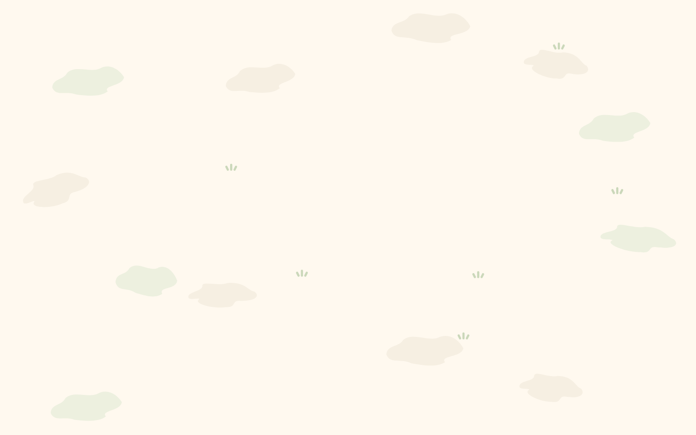
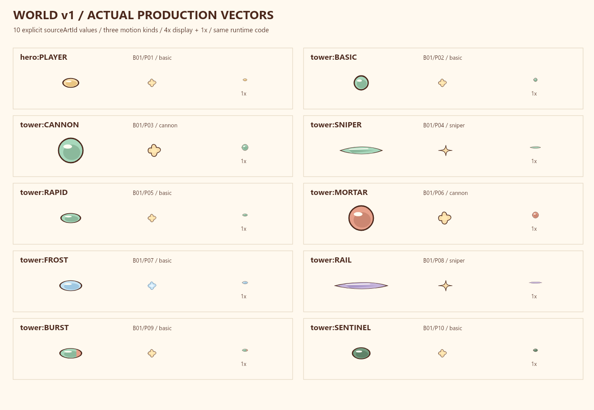
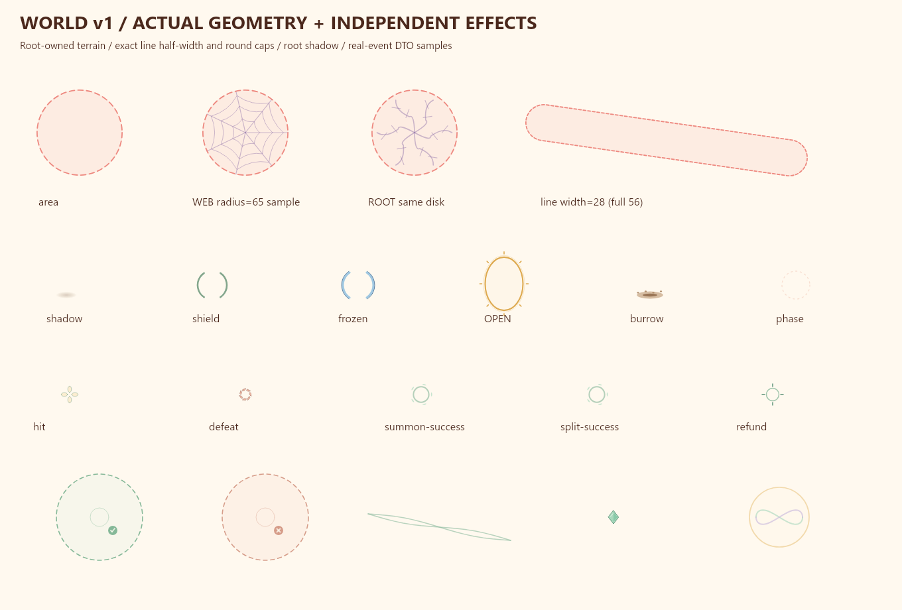

World r02 / actual production vectors
G1 resource/code sample awaiting main review. Runtime module, neutral alpha exports and these PNGs use one sampler. World API is implemented; full playable integration, 95-skill execution and performance remain pending.
Production notes + exact outstanding items · Manifest · 95-skill source mapping · Actual checks · Alpha + measured source pivots



Independent function/DTO samples; these are not gameplay screenshots.